📖 Introduction
ChaosGraph is a library designed to create stunning and interactive charts on AWT, Swing, and SWT components. It is perfect for building desktop applications, Eclipse-based tools, or even RAP dashboard web applications. With ChaosGraph, you can deliver an exceptional user experience with interactive and visually appealing charts.
🎯 What Can You Build?
- Pure Java GUI Applications with AWT/Swing
- Dashboard Interfaces for Desktop Tools
- Eclipse RCP Apps like CRMs or MIS systems
- Web Charts with Eclipse RAP
🖼️ Gallery
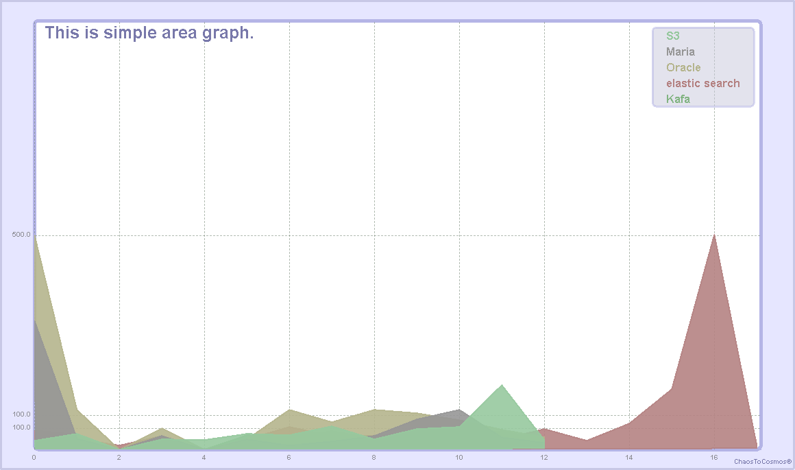
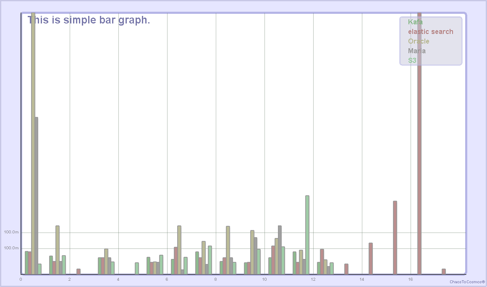
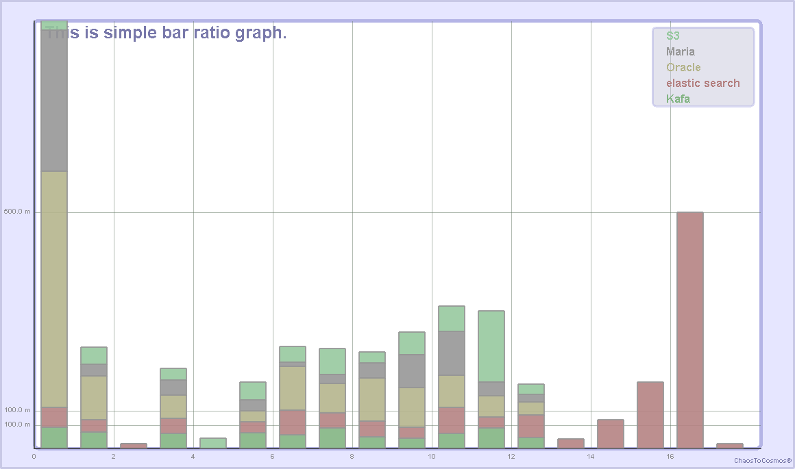
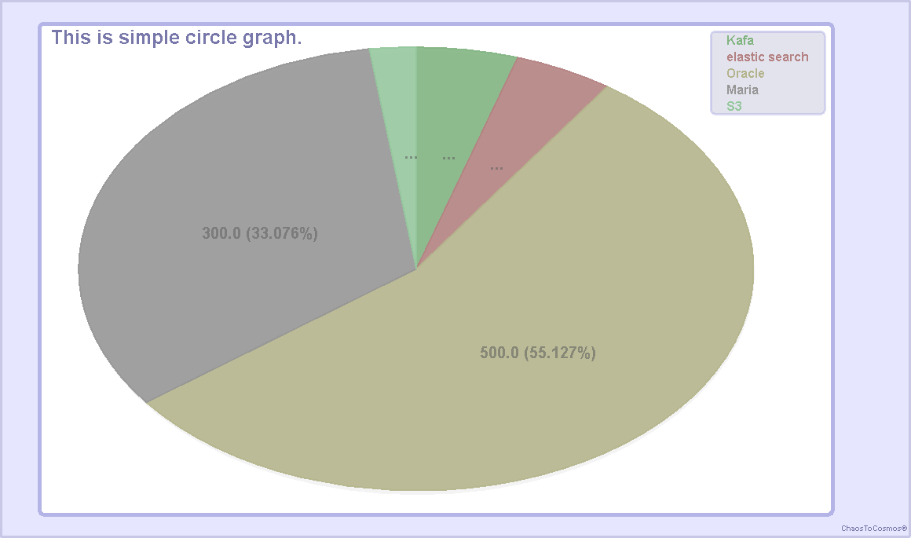
 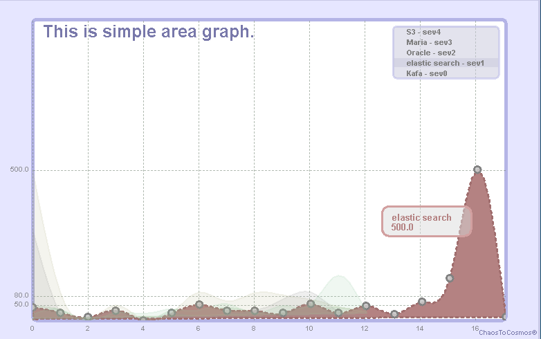
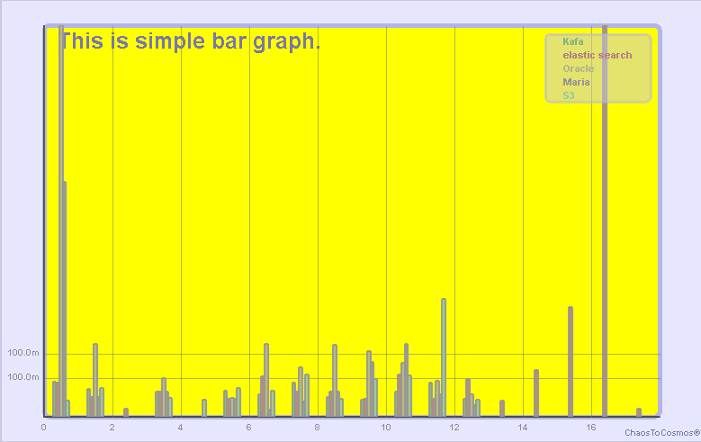
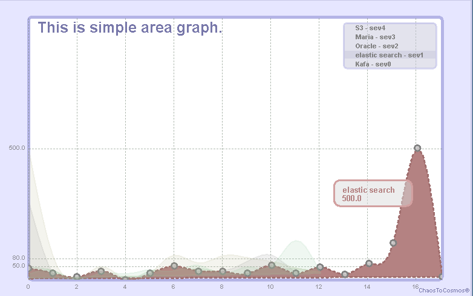
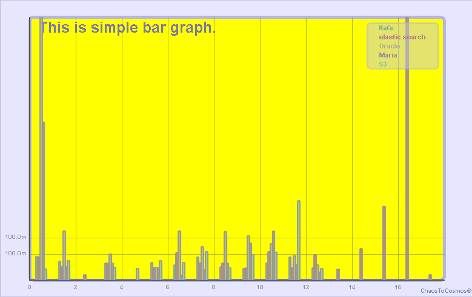
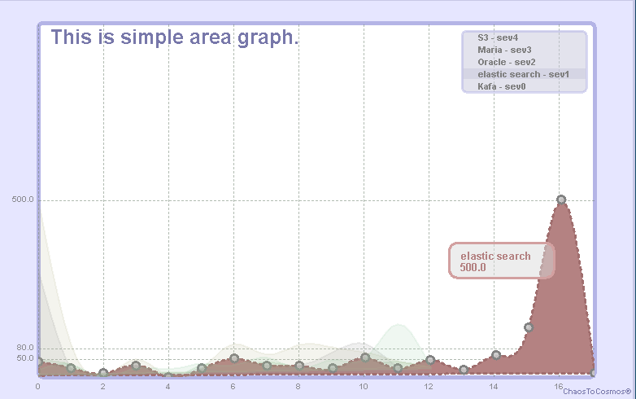
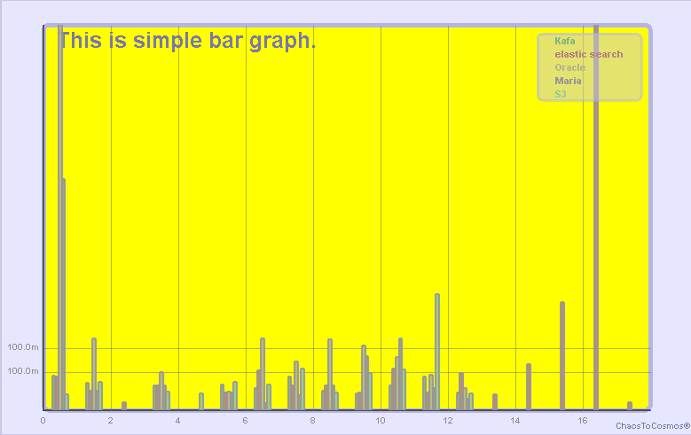
🚀 What's New in v2.0.0?
✨ New Features
- New Bar Ratio Graph type
- SWT & RAP native support
- Interactive data popups
- Mouse-wheel chart resizing
- Customizable event listeners
🔧 Improvements
- Better object-oriented structure
- Improved graphic rendering
- Performance-optimized rendering engine
📥 Download
Latest release: v2.0.0 (Oct 26, 2020).
Download it from the Releases section of the GitHub repository.
📦 Maven
<dependency>
<groupId>io.github.9ins</groupId>
<artifactId>chaosgraph</artifactId>
<version>2.0.0</version>
</dependency>🛠️ Gradle
implementation 'io.github.9ins:chaosgraph:2.0.0'🧩 Chart Object Structure
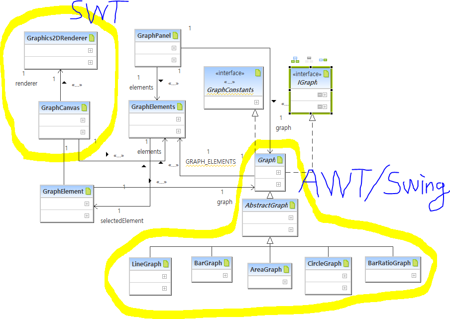💻 Example Snippet
AWTGraphSimple1.java
- Description: Chart viewer that allows users to select and render chart types.
- Feature: Export charts to various image formats.
- Location:
src/main/java/...
📧 Contact
Developed by Kooin Shin.
📧 Email: chaos930@gmail.com
🐙 GitHub: @9ins